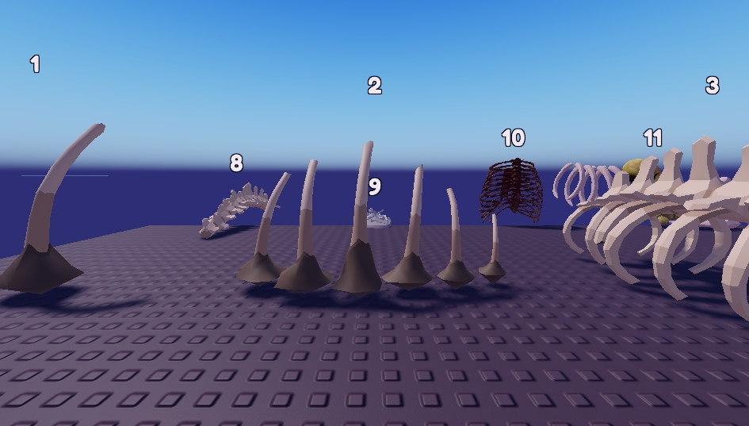
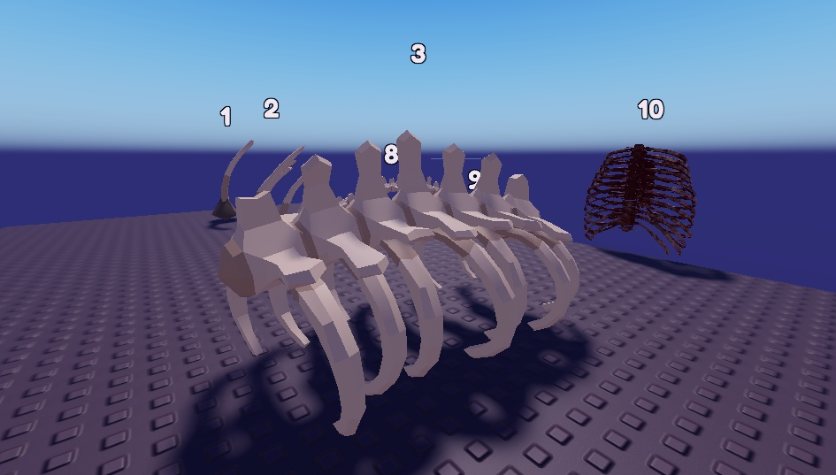
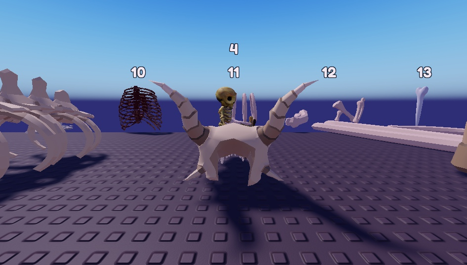
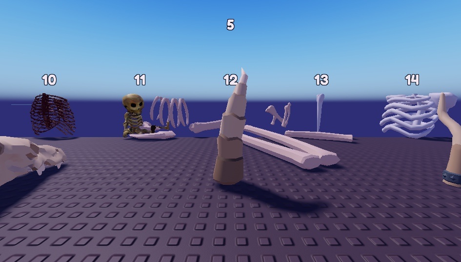
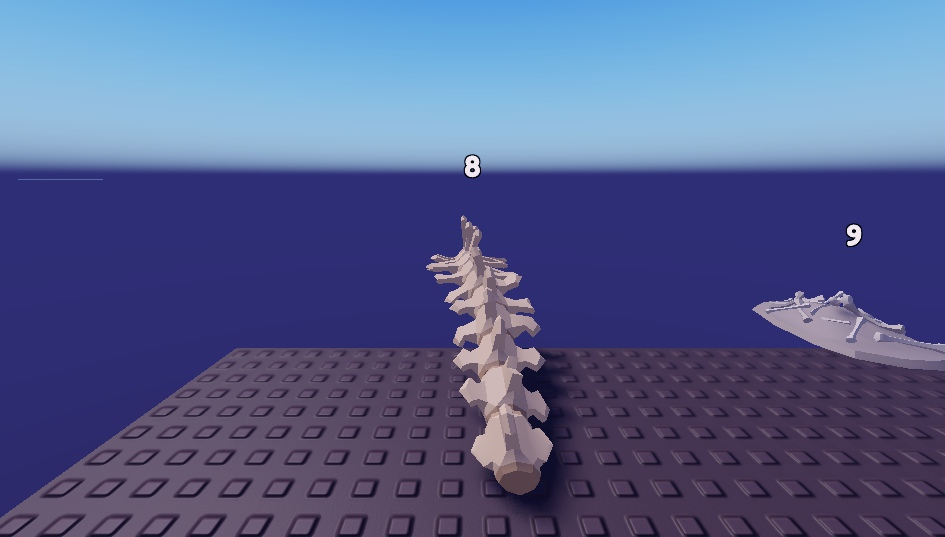
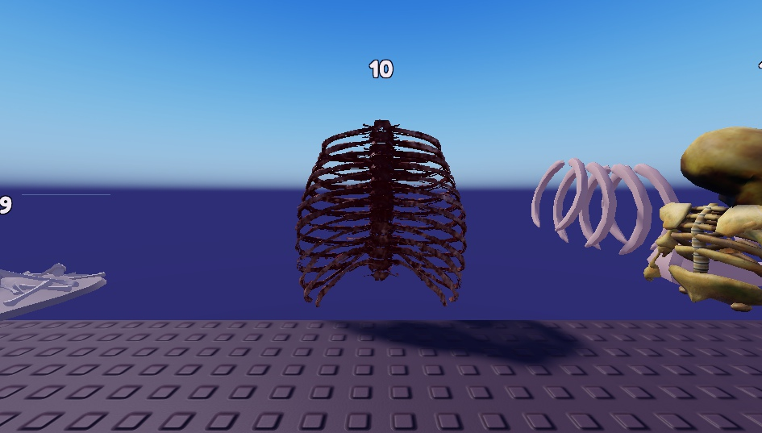
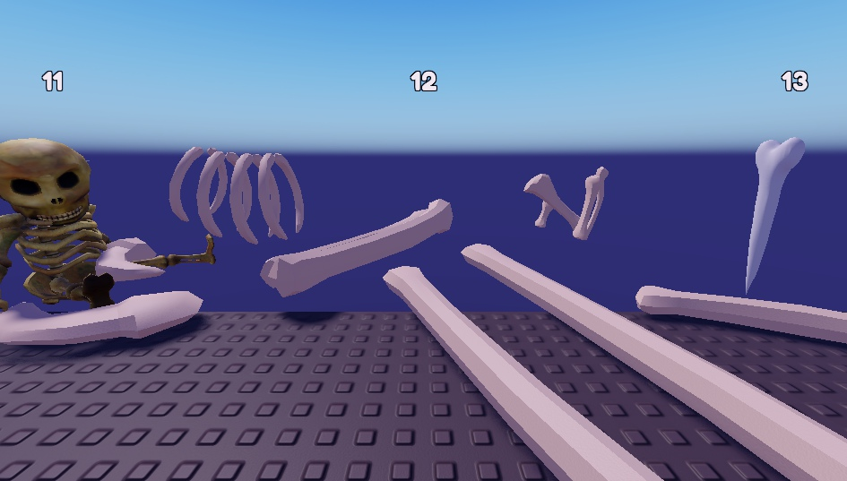
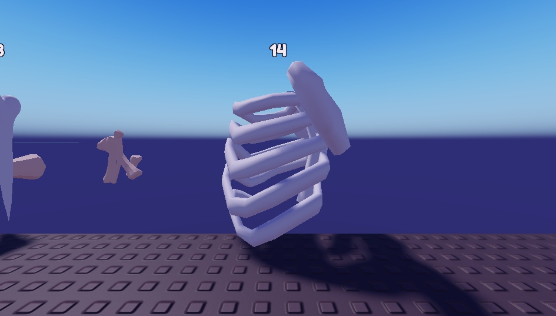

D'autres os gratuits de la boutique Roblox pour le mur du Bois des Ombres. Les n°1 à 8 viennent du pack « Synty Dungeon : squelettes et os », publié par Roblox lui-même (style soigné, tous assortis). Chaque capture est centrée sur le numéro écrit au milieu en haut ; les autres numéros sont les voisins.

1 : une grande côte (ou défense) plantée dans un socle de roche. 2 : une rangée de côtes de géant qui sortent du sol, comme un squelette enterré.

3 : cage thoracique de bête géante (colonne + côtes).

4 : crâne de bête à cornes, posé au sol.

5 : corne d'os dressée.

8 : longue colonne vertébrale.

10 : cage thoracique humaine réaliste, rouge sombre (un peu gore).

12 : os de dragon éparpillés au sol.

14 : torse de squelette (côtes).
Mon conseil : la rangée de côtes 2 comme mur principal, quelques grandes côtes 1 entre elles, et les crânes à cornes 4 au pied (avec les yeux mauves). C'est moins chargé que les cages actuelles et ça fait « squelette de géant enterré ».